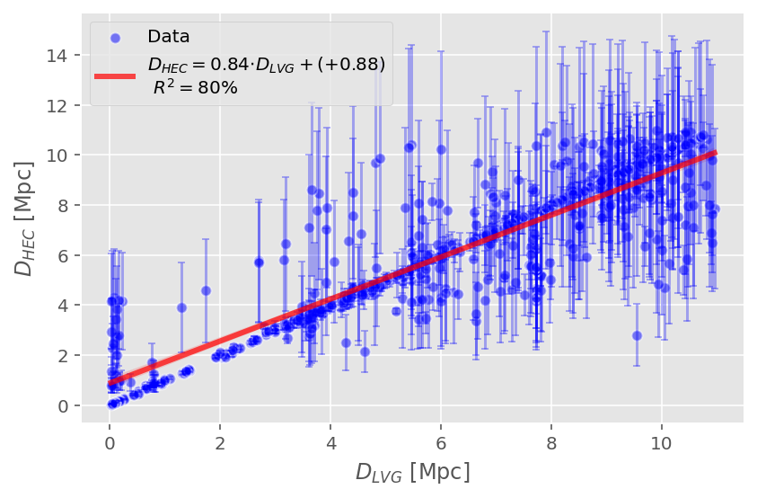
Comparison of Catalogs
The data
In this script we will compare 2 catalogs, HECATE (Kovlakas et al. (2021)) and LVG (Karachentsev and Kaisina (2013))
- The data have been joined based on their position in the sky (Ra, Dec).
- We assume that every galaxy within 2 arc seconds of the initial coordinates is the same galaxy.
- We use TOPCAT to create two joins, an inner and an outer join
- We will use the inner join for 1-1 comparisons
- If we see that the data are similar we can use the outer join
- For the comparison we keep the parameters names exactly they are given in the catalogs
The dataset we are going to use for the comparison (inner join) consists of 3934 galaxies and 171 columns with their physical characteristics.
Catalog Completeness
Checking for completeness in galaxy catalogs is essential to ensure that the data accurately represents the true population of galaxies, for z \approx 0. Incomplete catalogs can lead to biased results in statistical studies, such as the distribution of galaxy luminosity, mass, or star formation rates. Additionally, missing galaxies, especially those at faint magnitudes or large distances, can distort cosmological measurements and hinder our understanding of galaxy formation and evolution.
Completeness checks are crucial for addressing selection biases, identify gaps in the data and guide follow-up observations, ensuring that the catalog provides a reliable sample for scientific analysis. Without these checks, conclusions drawn from the data may be inaccurate or incomplete.
Completeness of the LVG Catalog
The local volume selection has been made by taking into account galaxies with:
- Radial velocities of
V_{LG}<600 \text{ km}\cdot\text{m}^{-1} \tag{1}
- Distances of
D<11\ \text{Mpc} \tag{2}
A simultaneous fulfillment of both conditions (1) and (2) is not required.
Difficulties in calculating the Completeness
As explained in (Karachentsev, Makarov, and Kaisina (2013)), it is difficult to calculate the completeness of the catalog.
- Completeness within a 10 Mpc radius is difficult to assess due to: - Variability in galaxy properties (luminosity, size, surface brightness, gas content) - Errors in distance measurements (Tully–Fisher method errors of ~20–25%), especially at the 10 Mpc boundary.
- Accurate distances are mainly known within ~5 Mpc.
- Non-Hubble motions (~300 km/s)1 may make up half of the adopted velocity constraint (Equation 1)
- Solution for our usage: only keep the galaxies inside a radius of D=11 Mpc
- HI sources in surveys with low angular resolution: “The presence around our Galaxy of hundreds of high-velocity clouds with low line-of-sight velocities and small W50 widths also provokes the inclusion of false “nearby” dwarf galaxies in the LV”(Karachentsev, Makarov, and Kaisina (2013))
- Astro-Spam and Survey Errors:
- Automatic surveys produce false detections (e.g., stars misclassified as galaxies, high-velocity clouds mistaken for dwarfs).
- Conditional Completeness Estimate: - Galaxies brighter than M_B^c = -11^m or with linear diameters larger than A_{26} = 1.0 kpc show (40–60)% completeness.
- “among the members of the Local Group (D < 1 Mpc), only half of the galaxies have absolute magnitudes brighter than −11^m. Consequently, more than half of the ultra-faint dwarf companions around normal galaxies, like the Sombrero galaxy (D = 9.3 Mpc), still remain outside our field of view.”
- Undetected Ultra-Faint Dwarfs:
- Many faint dwarf galaxies remain undetected beyond the Local Group. Estimated population of undetected dwarfs could be as large as 10^3–10^4 within the LV.
- Surface Brightness Distribution:
- Surface brightness remains consistent across distances, except for ultra-faint dwarfs (SB <31 \text{mag}\cdot\text{arcsec}^{-2}).
- Faintest dwarf galaxies are detectable only nearby due to their resolution into individual stars.
- Luminosity-Size Relationship:
- Observations align with cosmological models predicting L\sim A^3 (Navarro, Frenk, and White (1996)), though deviations occur for extremely low surface brightness galaxies.
- “The deviation from it at the extremely low surface brightness end is due to a systematic overestimation of dwarf galaxy sizes, the brightness profiles of which lie entirely below the Holmberg isophote.”
Completeness of HECATE
The completeness of HECATE is difficult to assess due to: - Unknown selection function of HyperLEDA and selection effects from other cross-correlated catalogs. - Estimation based on comparing B-band luminosity distribution with the galaxy luminosity function (LF).
HECATE is:
Complete down to L_B\sim 10^{9.5} L_{B,\odot} for distances less than 33 Mpc.
Complete down to L_B\sim 10^{10} L_{B,\odot} for distances between 67 Mpc and 100 Mpc.
Incomplete at distances greater than 167 Mpc, even for the brightest galaxies.
Completeness estimates based on B-band luminosity density:
>75% complete for distances less than 100 Mpc. \sim 50\% complete at distances of \sim170 Mpc.
Completeness exceeds 100% within 30 Mpc due to the overdensity of galaxies around the Milky Way.
Completeness in terms of stellar mass (M*):
Similar to B-band completeness when measured with K_s-band luminosity as a tracer for stellar mass.
Overdensity at small distances and cut-off at large distances are observed.
Completeness in terms of star formation rate (SFR):
~50% complete between 30 and 150 Mpc.
Lower SFR completeness due to limitations in WISE-based SFR estimates, which lack full sky coverage.
Despite IRAS’s limited depth, it provides >50% coverage for star-forming galaxies in the local neighborhood.
HECATE’s nonuniform SFR and stellar mass coverage, affecting the reliability of stellar population parameters.
In this section we will check the completeness
| Table | Number of galaxies |
|---|---|
| Inner join | 3934 |
| Outer join | 3934 |
| LVG | 1321 |
| HECATE | 2901 |
| Unique galaxies in LVG | 1033 |
| Unique Galaxies in Hecate | 2613 |
Completeness of the Inner join
\text{Completeness (X)}=\frac{\text{(Galaxies in Inner Join)}}{\text{(Galaxies in X)}}×100\%
Completeness (HECATE)= 136 %
Completeness (LVG)= 298 %
Completeness in Outer join
\text{Completeness (X)}=\frac{\text{(Galaxies in Outer Join form X)}}{\text{(Galaxies in X)}}×100\%
Completeness (HECATE)= 90 %
Completeness (LVG)= 78 %
Combined Completeness =\frac{\text{Total galaxies in Outer}}{\text{Unique galaxies in HECATE + LVG}}= 108 %
Completeness of the Data
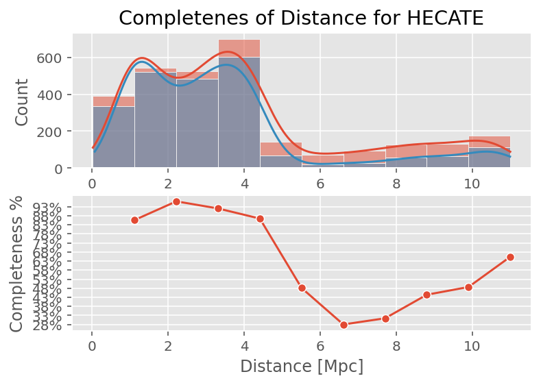
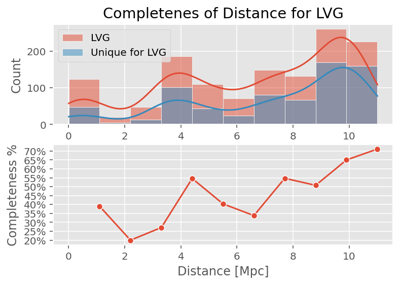
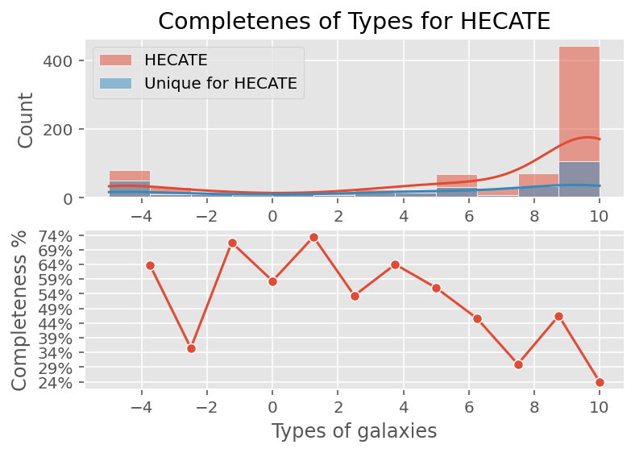
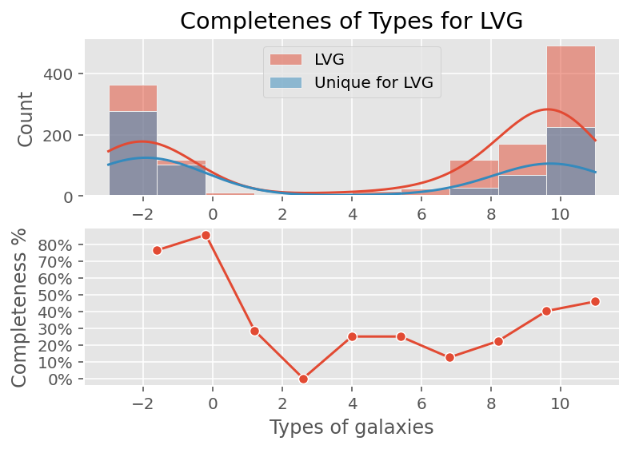
How are we going to compare the data?
For the comparison of our data we will mainly use two methods: linear regression and comparison of the distributions.
For the linear regression out main tools are scatter plots and R^2
R^2: Measures the proportion of variance explained by the linear model.
Slope of the Fitted Line: Should be close to 1 for a 1-1 correlation.
Pearson Correlation \rho: Measures the strength and direction of the linear relationship between two variables, ranging from -1 to 1. 2
Plots: Plots are essential for visually assessing the relationship between two datasets, identifying correlations, trends, and outliers, and evaluating the fit of linear models. Beside scatter plots and histograms, another useful plot is the Correlation Heatmap.
Correlation Heatmaps: A correlation heatmap is a graphical tool that displays the correlation between multiple variables as a color-coded matrix. It’s like a color chart that shows us how closely related different variables are. In a correlation heatmap, each variable is represented by a row and a column, and the cells show the correlation between them. The color of each cell represents the strength and direction of the correlation, with darker colors indicating stronger correlations.
For the distribution comparisons we will use histograms and Kernel Density Estimate (KDE) plots. The KDE plots visually represent the distribution of data, providing insights into its shape, central tendency, and spread.
Finally, we will examine the percentage change for each galaxy.
- Percentage change: We can calculate the percentage change of the data for each galaxy and then we can see if the data are similar, based on minimum, the maximum and the mean value of the difference.
\text{Percentage change} = \frac{V_{Hecate} - V_{LVG}}{V_{Hecate}}\cdot 100 \%
Comparable data
Coordinates
| LVG | HECATE | Description |
|---|---|---|
| Dis | D | Distance |
- The average error of the distance in the HECATE catalog is \overline{\delta D} = \pm 1.6 Mpc, so the intercept is included in the error.
- So we can assume that the Distances are the same
Velocities
| LVG | HECATE | Description |
|---|---|---|
| RVel (km/s) | V (km/s) | Heliocentric radial velocity |
| VLG (km/s) | Radial velocity | |
| cz (km/s) | Heliocentric velocity | |
| V_VIR (km/s) | Virgo-infall corrected radial velocity |
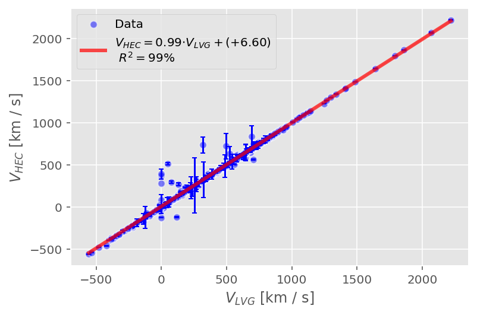
- The average error of the radial velocity in the HECATE catalog is \overline{\delta V} = \pm 12\text{km}\cdot s^{-1} , so the intercept is included in the error.
- So we can assume that the radial velocities are the same
[?] The strong correlation between the velocities reported by the HECATE and LVG catalogs (Figure 5) can be attributed to the fact that both measure the same intrinsic galaxy velocities but reference them to different frames. For instance, velocities can be corrected for the movement of the Earth (heliocentric frame) or the for the Virgo-infall. These corrections shift the measured velocity slightly, but the fundamental measurement remains consistent. This explains why the velocities are highly correlated, as they represent the same physical phenomenon but adjusted for different reference points.
Morphology and Geometry
| LVG | HECATE | Description |
|---|---|---|
| TType | T (with errors) | Numerical Hubble type following the de Vaucouleurs system |
| inc | INCL | Inclination (deg) |
| a26_1 (Major) | R1 (Semi-major axis) | angular diameter (arcmin) |
“Morphological type of galaxy in the numerical code according to the classification by de Vaucouleurs et al. (1991). It should be noted that about three quarters of objects in the LV are dwarf galaxies, which require a more detailed morphological classification. For example, dwarf spheroidal galaxies and normal ellipticals are usually denoted by the same numerical code T < 0, although their physical properties drastically differ. The classification problem arises as well for the “transient” type dwarf galaxies, T r, which combine the features of spheroidal (Sph) and irregular (Ir)systems. Due to small classification errors, such objects may “jump” from one end of the T scale to the other.” (Karachentsev, Makarov, and Kaisina (2013))
“as they correspond to types T < 1. The shortcomings of such a simplified classification of dwarf systems have become apparent; hence, van den Bergh (1959) proposed a more refined scheme where dwarf galaxies were assumed to be divided by luminosity class…Such an approach allowed us to avoid unpleasant cases in which a dwarf galaxy of intermediate type jumps over due to a misclassification from one end of the de Vaucouleurs sequence (T < 1) to the other (T = 9, 10).” (Karachentsev and Kaisina (2013))
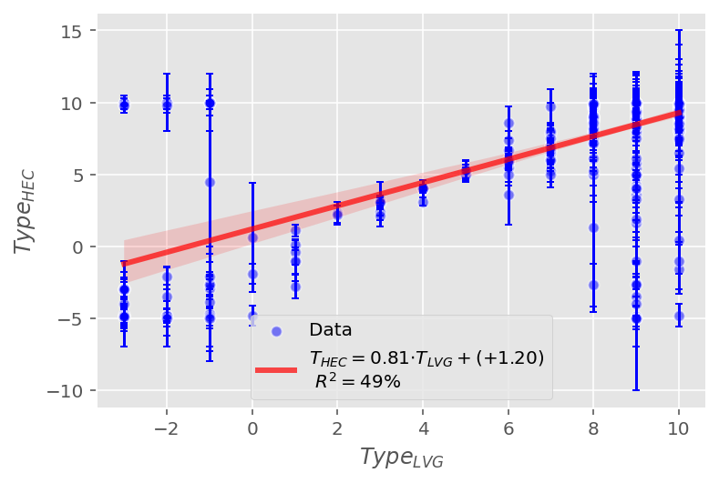
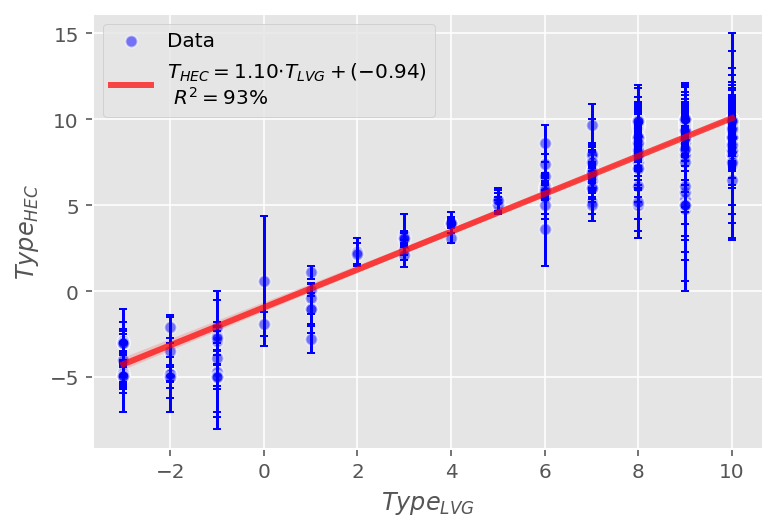
- we can assume that the galaxies from the upper left and lower right regions of the plot are classified differently because of this
- this might explain the large errors \delta T of HECATE
- why we see a difference in the distribution of (Figure 2)
We can remove the “problematic” galaxies by only keeping the ones with: |{T_{HECATE}-T_{LVG}}|<\sigma_{T_{LVG}} = 4.8
- The average uncertainty of the morphological type in the HECATE catalog is \overline{\delta T} = \pm 1.4, so the intercept is included in the error.
- So we can assume that the Morphological Types are the same
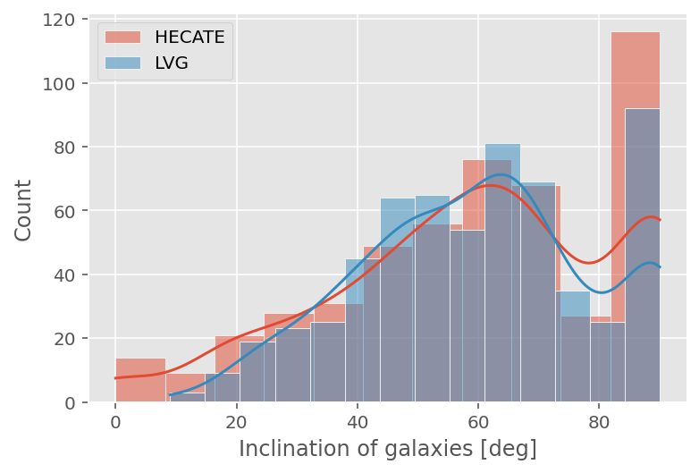
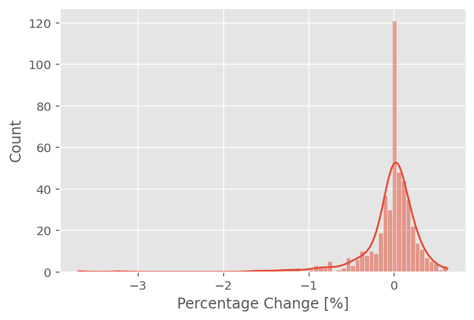
| inc | INCL | Percentage Change [%] | |
|---|---|---|---|
| count | 1308 | 1994 | 202 |
| mean | 55 | 51 | -0 |
| std | 20 | 20 | 0 |
| min | 0 | 0 | -3 |
| 50% | 54 | 50 | 0 |
| max | 90 | 90 | 1 |
We can see that for values in the range [\sim 30^\circ,\sim 80^\circ], the values of the LVG inclination are higher (Figure 7). However, since their means, median, min and maxes are similar and the percentage change is practically 0% (mean, median, \sigma = 0 with a range [-3\%,1\%]), we can ignore the differences and assume they are the same values.
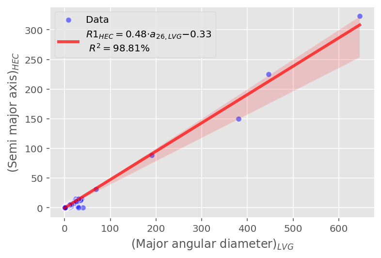
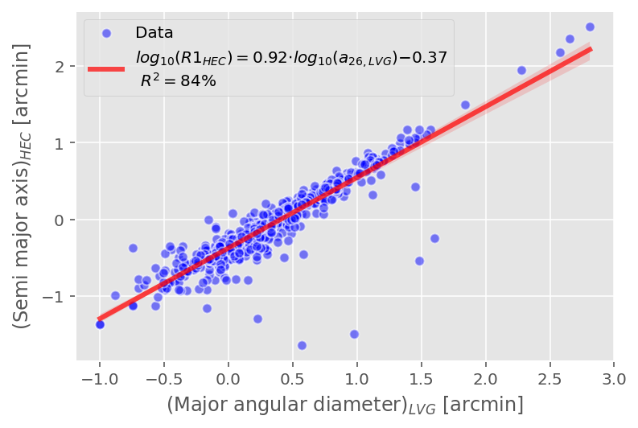
it is not very clear if we truly have a correlation or not (Figure 8 (a)). We need to see the linear correlation of the decimal logarithms (Figure 8 (b)).
\overline{R_1} = 3.9 [arcmin], \overline{a_{26}} = 9.3 [arcmin], so the intercept is negligable.
R_1 = 0.48\cdot a_{26}-0.34 \sim \frac{1}{2}a_{26}
\log(R1) = 0.89\log(a_{26})-10^{0.38} = \log(10^{-0.38}a_{26}^{0.89}) = \log(0.41\cdot a_{26}^{0.89})\Rightarrow R1\simeq \frac{a_{26}}{2}
Luminosities
| LVG | HECATE | Description |
|---|---|---|
| logKLum | logL_K |
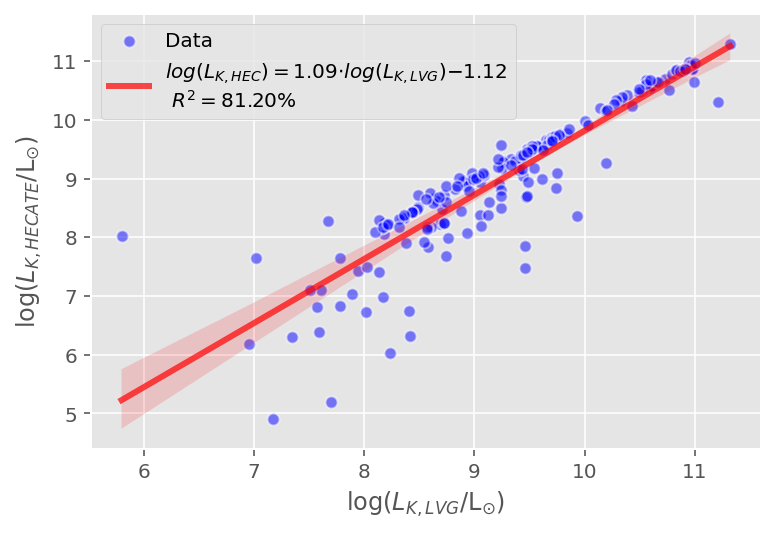
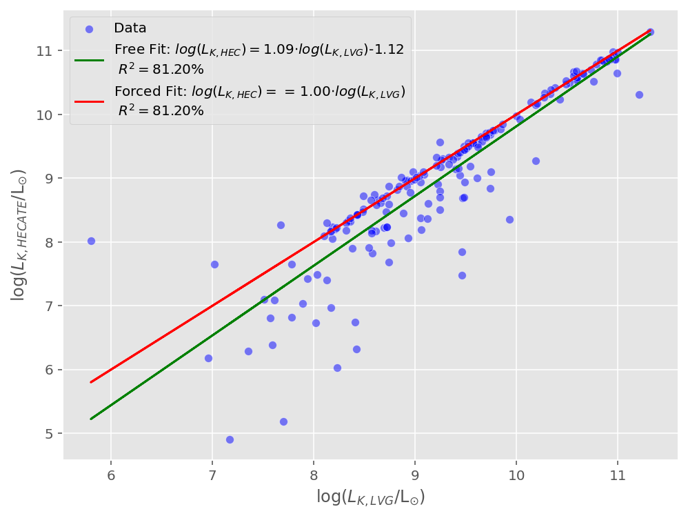
\log(L_{K,HEC})=1.16\log(L_{K,LVG})-1.78=\log\left(\frac{{L_{K,LVG}}^{1.16}}{10^{1.78}}\right) \Leftrightarrow L_{K,HEC}=0.02\cdot{L_{K,LVG}}^{1.16}
To assess whether the two galaxy catalogs have a 1-1 correlation, I applied two types of linear fits to the data: a free fit and a forced fit. The free fit allows both the slope and intercept to vary freely, meaning the line can take on any slope and can cross the y-axis at any point. In contrast, for the forced fit, I set the slope to exactly 1 and fixed the line to pass through the origin, meaning the equation becomes y=x. This forced fit represents a perfect 1-1 relationship, where the values from one catalog should match the other exactly, without any shift or scaling.
After fitting the data using both methods, I calculated the R^2 value for each fit. In this case, both the free fit and the forced fit produced very similar R^2 values, around 87.13%3, indicating that both fits explain about 87% of the variance in the data (Figure 9).
The fact that both the free and forced fits have nearly identical R^2 values suggests that the data closely follows a 1-1 relationship. In the free fit, the best-fitting line had a very small intercept, which shows that allowing the line to shift vertically did not significantly improve how well the line fits the data. This strongly indicates that the data from the two catalogs are well-aligned and follow the relationship y=x quite closely, which is what we expect if the catalogs are in good agreement.
While these results are promising, it’s important to note that achieving an R^2 of 87%—while high—doesn’t necessarily prove a perfect 1-1 correlation. There may still be small discrepancies or uncertainties in the data that prevent a perfect match. Nonetheless, the fact that fixing the slope to 1 and forcing the line through the origin gave such a good result suggests that the two catalogs are very consistent with each other.
Magnitudes
| LVG | HECATE | Description |
|---|---|---|
| mag_B (with errors) | BT (with errors) | |
| Kmag | K | 2MASS band magnitude (both) |
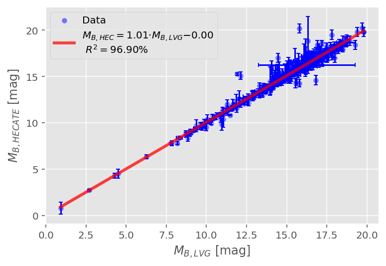
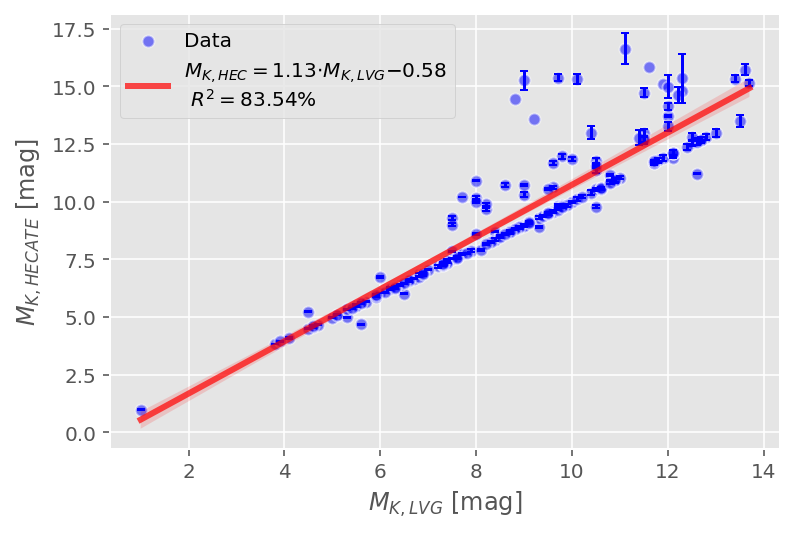
- M_B: it is a 1-1 correlation, since the average error M_{B,HECATE} = 0.4\ mag, so the itercept is smaller than the error (Figure 10)
- M_K: we need to examine it more, since the intercept is bigger than the error M_{K,HECATE} = 0.09\ mag (Figure 10)
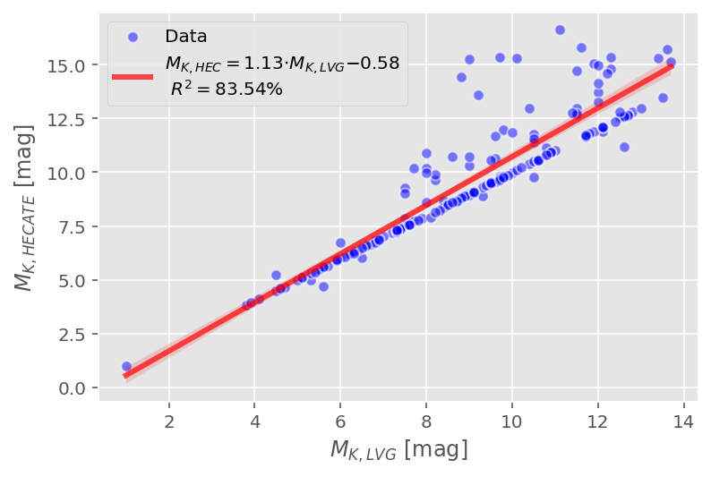
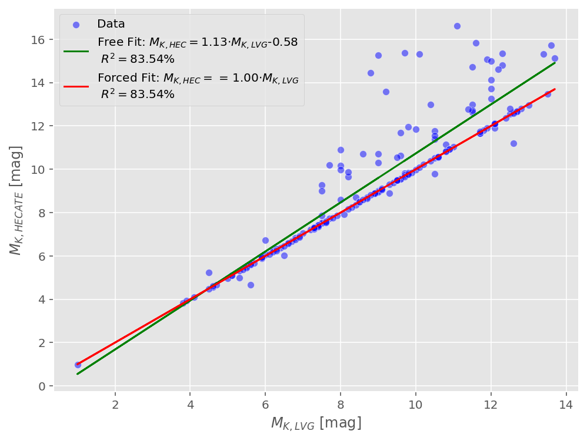
Following the same logic as in Figure 9, we force the parameters of the linear regression to be y=1\cdot x + 0.
In this case, the data is such that both the forced fit and the free fit explain the variance almost identically (Figure 11 (b)). This can happen when the data roughly follows the pattern y≈x, but with a slight bias that the free fit can account for (in this case, a slope slightly greater than 1 and a negative intercept).
SFR
| LVG | HECATE | Description |
|---|---|---|
| logSFR_TIR | Decimal logarithm of the total-infrared SFR estimate [Msol/yr] | |
| logSFR_FIR | Decimal logarithm of the far-infrared SFR estimate [Msol/yr] | |
| logSFR_60u | Decimal logarithm of the 60um SFR estimate [Msol/yr] | |
| logSFR_12u | Decimal logarithm of the 12um SFR estimate [Msol/yr] | |
| logSFR_22u | Decimal logarithm of the 22um SFR estimate [Msol/yr] | |
| logSFR_HEC | Decimal logarithm of the homogenised SFR estimate [Msol/yr] | |
| logSFR_GSW | Decimal logarithm of the SFR in GSWLC-2 [Msol/yr] | |
| SFRFUV | FUV derived integral star formation rate | |
| SFRHa | H{alpha} derived integral star formation rate |
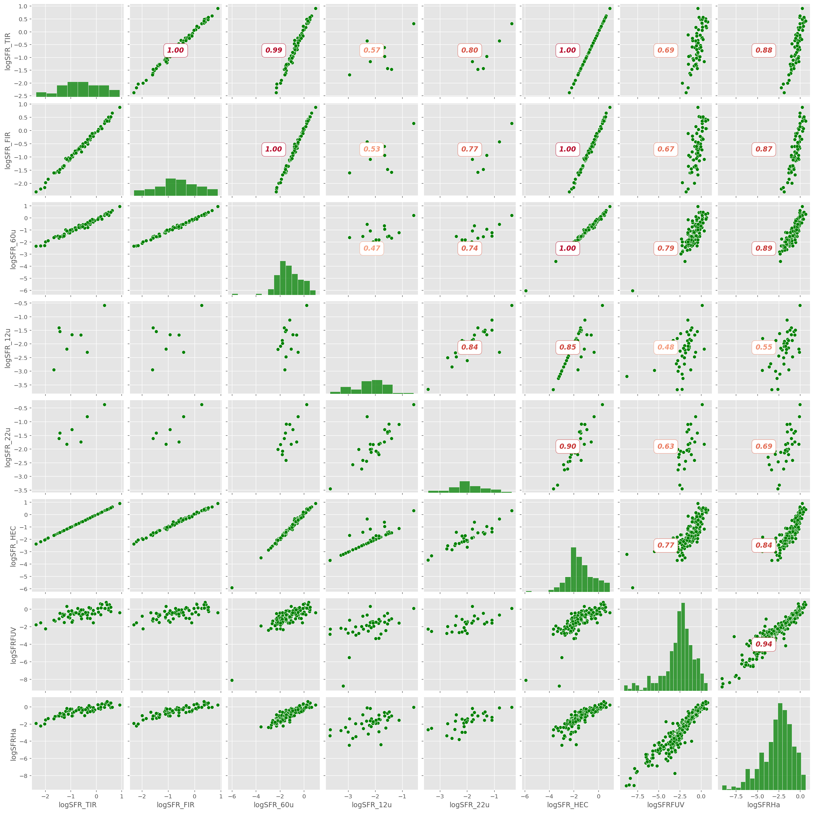
The SFR according to (Kroupa et al. (2020)), can be calculated from the mean of SFR from the Ha and FUV, for SFR>10^{-3}\ M_\odot\, yr^{-1}. As we can see from the plots (Figure 13) it could be a good aproximation.
SFR = \frac{SFR_{FUV}+SFR_{H\alpha}}{2}, \text{if both exist, else: } SFR = SFR_i,\ i= FUV,\, H\alpha \tag{3}
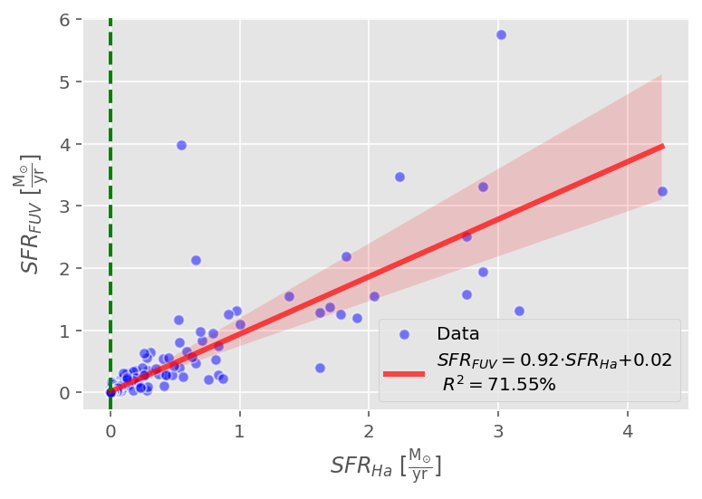
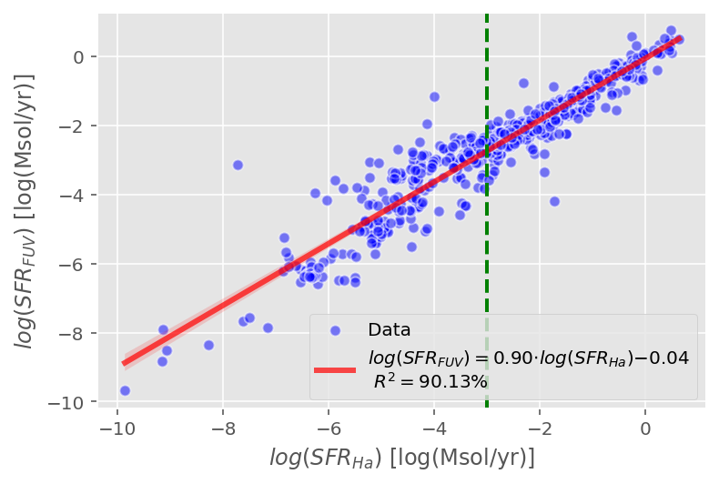
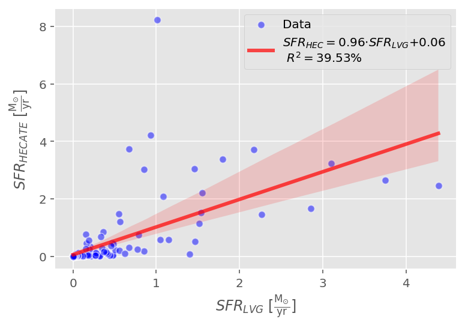
The low correlation in Figure 14 (a) and the interval in Figure 14 (b) show that the approximation (Equation 3) is not great. According to Karachentsev and Kaisina (2013):
Hα and FUV timescales: H_\alpha traces short-term star formation (~10 Myr) via massive O-type stars, while FUV traces longer-term star formation (~100 Myr) from B-type stars.
Discrepancies due to star formation bursts: In galaxies with bursty or episodic star formation, Hα can significantly overestimate SFR compared to FUV, which lags in reflecting recent star formation events.
Low-mass galaxy variability: The scatter between SFR_{\text{H}\alpha} and SFR_{\text{FUV}} is particularly high in low-mass, dwarf galaxies, where stochastic star formation history causes wide variability between the two indicators.
Measurement uncertainties: Internal extinction, errors in distance estimates, and IMF stochasticity introduce biases in both Hα and FUV fluxes, making simple averaging inappropriate.
Conclusion: The SFR_{\text{total}} = \text{mean}(SFR_{\text{H}\alpha}, SFR_{\text{FUV}}) method oversimplifies the complexity of star formation processes and is not reliable for galaxies with variable star formation or significant measurement uncertainties
Masses
| LVG | HECATE | Description |
|---|---|---|
| logM26 | Log mass within Holmberg radius | |
| logMHI | Log mass within Holmberg radius | |
| logM_HEC | Decimal logarithm of the stellar mass [Msol] | |
| logM_GSW | Decimal logarithm of the stellar mass in GSWLC-2 [Msol] | |
| logStellarMass | Stellar Mass from M_*/L=0.6 |
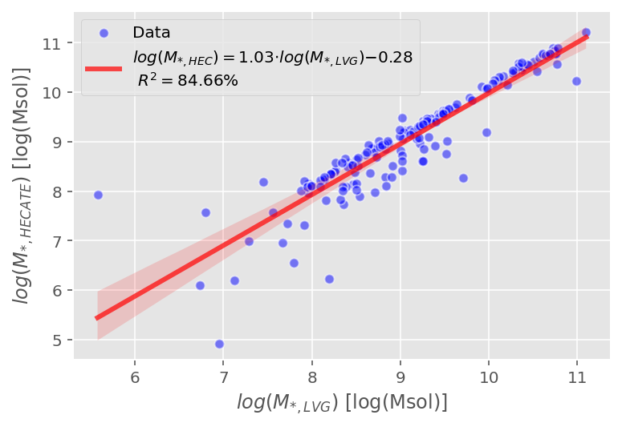
\log{M_{*,HECATE}}=1.07\cdot\log{M_{*,LVG}}-0.69, \text{ but } \log{M_*}>6\Rightarrow M_{*,HEC}\sim M_{*,LVG}
As we can see the aproximation of Mass/Light=const.=0.6 is a pretty good approximation, for the calculation of \log(M_*/M_\odot), especially for high-mass galaxies
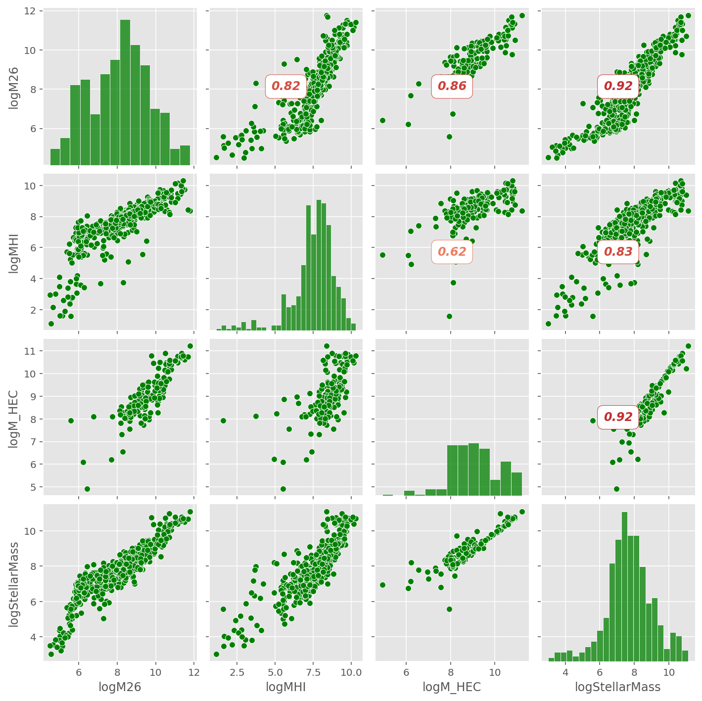
The heatmap is used to visually assess the correlations between different mass estimates of the galaxies, including the mass within the Holmberg radius (M_{26}), the HI gas mass (M_{HI}), the stellar mass from the HECATE catalog (M_{HEC}), and the stellar mass derived assuming a mass-to-light ratio of 0.6 (StellarMass). The purpose of this visualization is to quickly identify whether these different mass measurements show consistent correlations, which would suggest that they capture similar aspects of the galaxies’ mass distributions.
This quick check using the heatmap helps confirm that, while different catalogs and methods might have their own specific ways of calculating galaxy masses, the overall mass estimates align well, offering a solid basis for further analysis of galaxy properties.
References
“Essay.” n.d. Accessed October 5, 2024. https://ned.ipac.caltech.edu/level5/Glossary/Essay_pecmotion.html.
Karachentsev, Igor D., and Elena I. Kaisina. 2013. “STAR FORMATION PROPERTIES IN THE LOCAL VOLUME GALAXIES VIA Hα AND FAR-ULTRAVIOLET FLUXES.” The Astronomical Journal 146 (3): 46. https://doi.org/10.1088/0004-6256/146/3/46.
Karachentsev, Igor D., Dmitry I. Makarov, and Elena I. Kaisina. 2013. “UPDATED NEARBY GALAXY CATALOG.” The Astronomical Journal 145 (4): 101. https://doi.org/10.1088/0004-6256/145/4/101.
Kovlakas, K., A. Zezas, J. J. Andrews, A. Basu-Zych, T. Fragos, A. Hornschemeier, K. Kouroumpatzakis, B. Lehmer, and A. Ptak. 2021. “The Heraklion Extragalactic Catalogue (HECATE): A Value-Added Galaxy Catalogue for Multimessenger Astrophysics.” Monthly Notices of the Royal Astronomical Society 506 (September): 1896–1915. https://doi.org/10.1093/mnras/stab1799.
Kroupa, P, M Haslbauer, I Banik, S T Nagesh, and J Pflamm-Altenburg. 2020. “Constraints on the Star Formation Histories of Galaxies in the Local Cosmological Volume.” Monthly Notices of the Royal Astronomical Society 497 (1): 37–43. https://doi.org/10.1093/mnras/staa1851.
Footnotes
Non-Hubble motion refers to the component of a galaxy’s velocity that deviates from the uniform expansion of the universe, described by the equation V= H_0 d + v_p,where V is the total velocity, H_0 d represents the Hubble flow, and v_p is the peculiar velocity. “Essay” (n.d.)↩︎
In simple linear regression, R^2 is the square of the Pearson correlation coefficient \rho.↩︎
The difference of the linear regression with the free parameters and the forced regression is \Delta R^2 = 1.14\cdot 10^{-13}\%↩︎